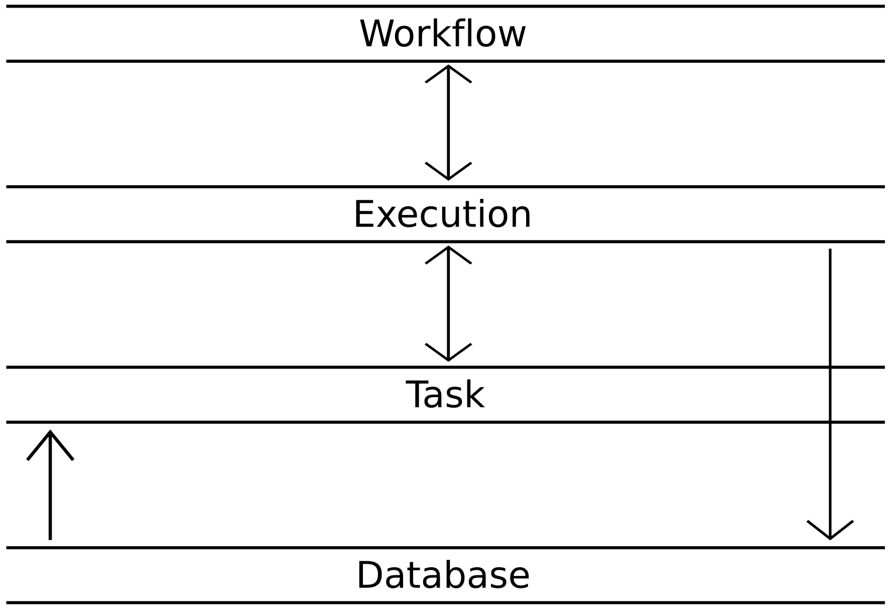
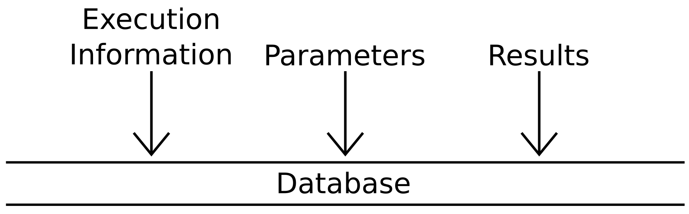
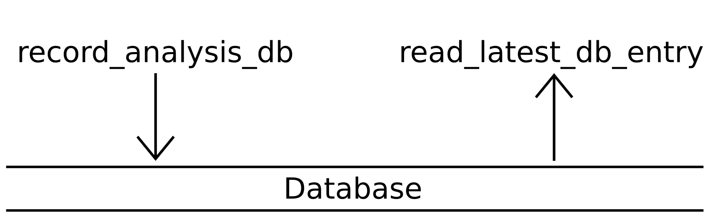
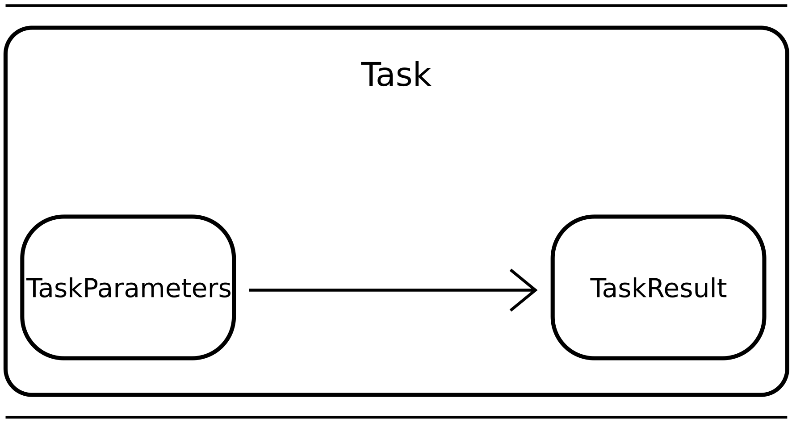
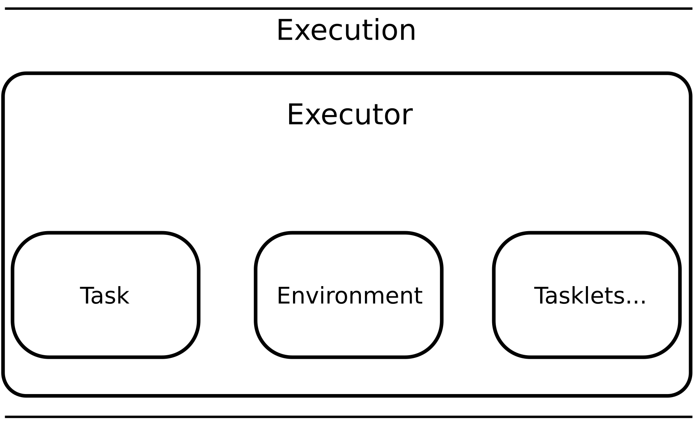
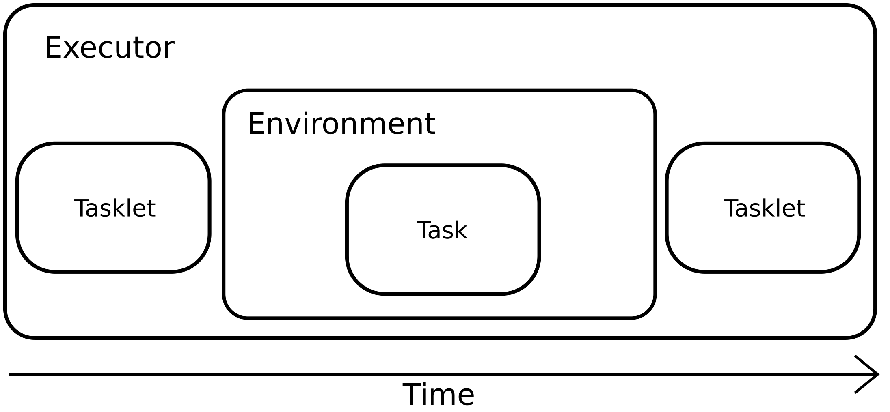
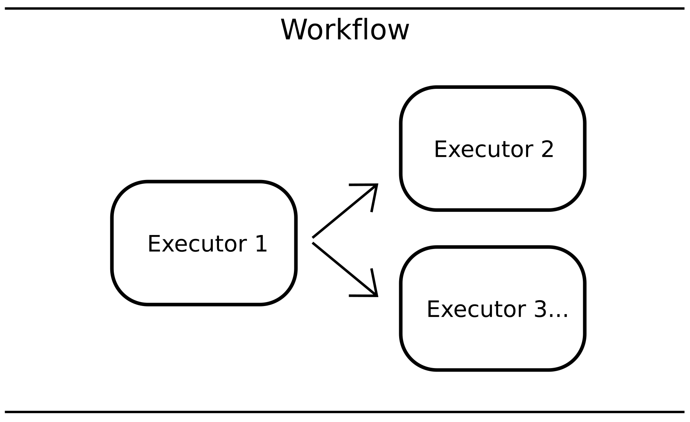
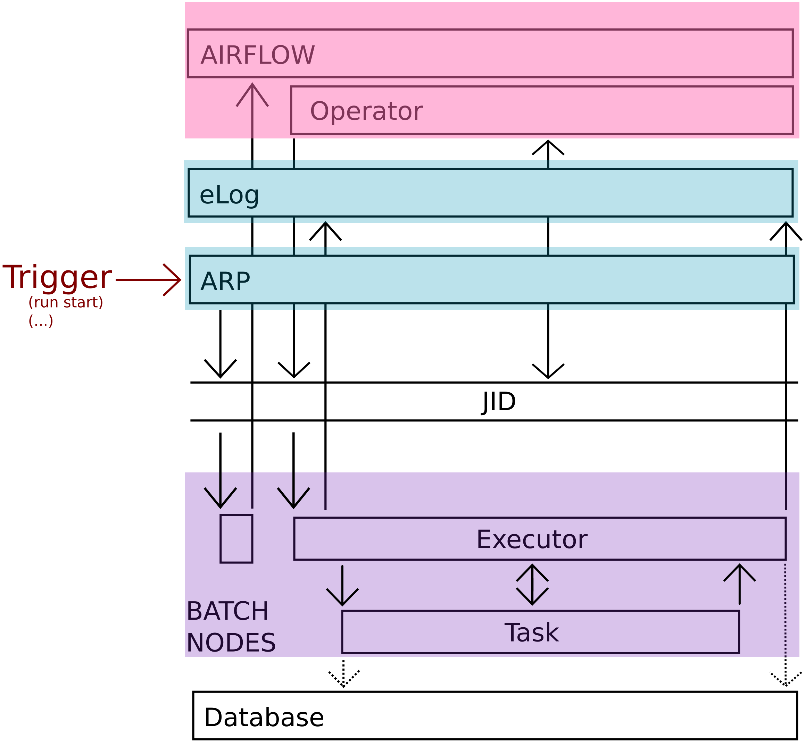

LUTE Architecture and Execution Model
The following page attempts to provide an overview of the architecture of LUTE and the various steps and components involved in its execution model.
Architecture
The LUTE architecture consists of four separate layers:
- A database layer for storing parameter information and the results of analysis.
- A Task layer which runs analysis code.
- An execution layer which manages the differing environments used by components of the Task layer.
- A workflow layer which launches series of managed Tasks (see below), in a specified order, to run various analysis routines in their respective environments.
A rough schematic of the architecture and how the various layers communicate with each other is given by:

Glossary
| Term | Meaning |
|---|---|
Task |
A unit of code “of interest” – e.g. may be an algorithm. Definition is flexible but typically will encompass processing until a natural stopping point. |
Executor |
A manager – executes or runs a Task in a specific environment and provides interactions with UI, etc. |
Managed Task |
Executor + Task to run. When code is executed in LUTE, it is done through managed Tasks. Task code on its own is not usually submitted. |
Tasklet |
A Python function attached to a managed Task. |
DAG |
Directed acyclic graph. A workflow, i.e., a number of managed Tasks and their dependencies. |
Database Layer
The database layer stores a complete set of information required for reproducing a processing step upon completion of that step, regardless of whether the analysis exited successfully.
The information stored includes:
- Parameter sets
- Results information - This may be a pointer to objects stored on a filesystem (i.e. a path), or the result itself the result can be simply represented, such as by a scalar value.
- Execution information - Information about communication protocols used between
TaskandExecutor, as well as pertinent environment variables.
Importantly, all the data stored in the database is available to subsequent processing steps. In this way Tasks which are written to be runnable independently can be chained together into workflows which specify dependencies between them.

The database API is designed to be light-weight. The current implementation makes use of a sqlite database for portability, but this can be exchanged as needed.
In general, the API is designed with the idea the Task layer reads from the database, while the Execution layer writes.

Task Layer
The Task layer consists of the actual analysis "code of interest". In paritcular, it is composed of three main objects:
TaskParameters: A model comprising a set of type-validated parameters needed to run theTask.TaskResult: A description of the result of the analysis. Depending on theTask, the entire result may be contained within this object, although frequently aTaskwill, e.g., write out a file, the path to which is recorded as the result.Task: The main code to run. This object also contains the parameters and results.

A Task can be instantiated by passing in an instance of the TaskParameters object. The Task can then be run by invoking the run() method. A script is provided to do this: subprocess_task.py, although this script is not intended to be run directly, but rather submitted by an Executor (see below).
The subprocess_task.py script will go through the following steps:
subprocess_task.pydoes parameter validation. A configuration YAML is parsed for the specificTaskwe want to run, and the parameters are type-validated. If the validation fails, the script exits at this point without attempting to execute the analysis code.Taskis created and signals it is ready to start to theExecutor. It passes along the validated parameter set along with this signal. After signalling, the process suspends itself with aSIGSTOP. This gives theExecutortime to run any tasklets it may need to.- The process is resumed by the
Executorwhen appropriate and theTaskbegins its actual analysis. - On completion the
Tasksends the result back to theExecutorand exits.
Execution Layer
The execution layer runs a Task in the appropriate environment. It consists of a number of principle objects:
Executor: Orchestrates and managesTaskrunning. TheExecutoralso manages database writes and results presentation via preferred UI.Task: The code to execute- Tasklets: Auxiliary functions. These are also run by the
Executor, either before or after the mainTask. They can take in as arguments the parameters which are passed to the mainTask.

A managed Task, in LUTE terminology, is an instance of an Executor which in turns runs (i.e. manages) a Task (the actual analysis code to be run). In nearly all cases, except for perhaps when debugging, managed Tasks are the smallest executable units in LUTE. I.e. all analysis is submitted via managed Tasks, rather than by running the Task itself. A simple script, run_task.py, is provided to run one:
> python -B [-O] run_task.py -t <ManagedTaskName> -c </path/to/config/yaml>
This script takes the name of the managed Task and the path to the configuration YAML file. The managed Task is selected from one of those defined in the module managed_tasks.py, and then its execute_task() method is run.
On calling execute_task(), the Executor goes through the following stages:
- The
Executorupdates the environment that theTaskwill run in. How it does so is defined by using theupdate_environment()andshell_source()methods when it is created in themanaged_tasks.pyfile. If these methods are not callled, then theTaskwill execute in the environment of theExecutor. - The
Executorthen submits thesubprocess_task.pyas a subprocess. The script will run the specifiedTaskand enter its task loop. The subprocess is launched with any environment modifications created in step 1. - The
Taskprocess will auto-suspend (see above). At this point theExecutorwill run anytaskletsthat need to be run before the main analysis. NOTE: Because the subprocess has already been launched at this point, thetaskletcan NOT perform any environment modifications. On the other hand, however, theExecutorwill now have access to validated parameters for theTask, so these can be used as arguments to thetasklet. See here for more information ontasklets. - After running all
tasklets, theExecutorwill then resume theTaskprocess. It then continues processing signals, messages, etc., until the process completes, either successfully or due to an error. - When the subprocess exits, post-
Tasktaskletsare run and any results are processed by theExecutor. This may include activities such as preparing figures for the eLog. - Finally, the
Executorrecords the information about theTaskexecution into the database.

Workflow Layer
The workflow layer controls the order of submission of a number of managed Tasks. In the most generic form, it consists of:
- A series of managed
Tasks (Executors) - A description of the connectivity or dependencies between them. This may also include additional information such as early termination or special submission conditions, e.g. end a workflow early if
Executor2 reports success. Or, runExecutor3 only ifExecutor1 reports failure.

Currently, the workflow layer is provided by either Airflow, or Prefect. The code running in the workflow layer is mostly independent of the rest of the code base. The workflow orchestration, in fact, runs simultaneously but on separate machines than the managed Tasks it is submitting.
A schematic overview of the various components in an Airflow-based workflow running on S3DF is given below. A trigger, such as the start of a DAQ run, reaches the ARP (automatic run processor), which causes a small batch job to be started on S3DF. This batch job makes a request to the Airflow server to begin running a specific workflow. Airflow then submits Operators, which request managed Tasks be submitted as batch jobs on the S3DF. Once the batch job has started, the execution proceeds through the various layers described above.
